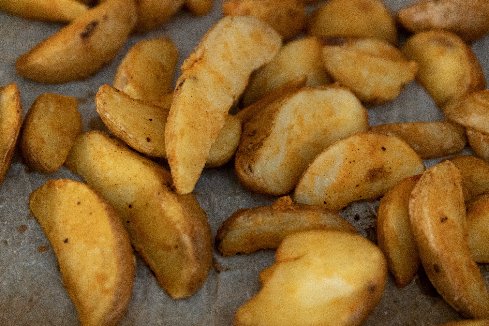

HOME
odin dey work oh!

FRIED POTATOES
this is patrick's fresh fried potatoes, very hot and crunchy
ingredients
- yam
- kings oil
- salt
- chilli
steps
- peal and wash ya potatoes
- add a little salt to it before frying
- set your oilon fire to get hot
- fry your potatoes on low heat for 10 mins
- sprinkle your chilli on it after frying